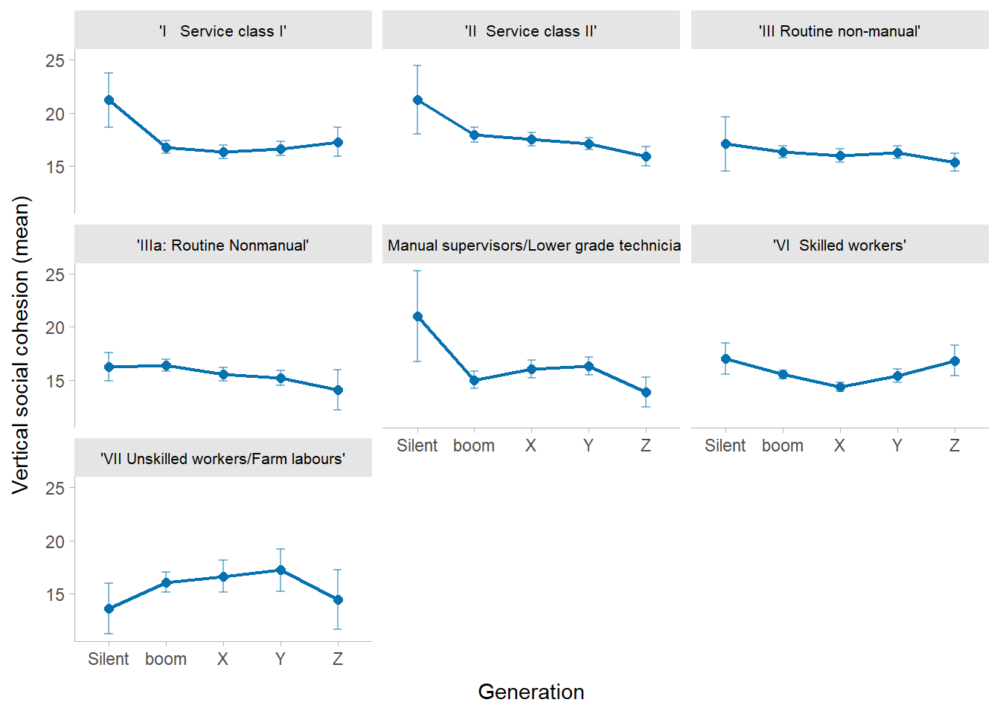
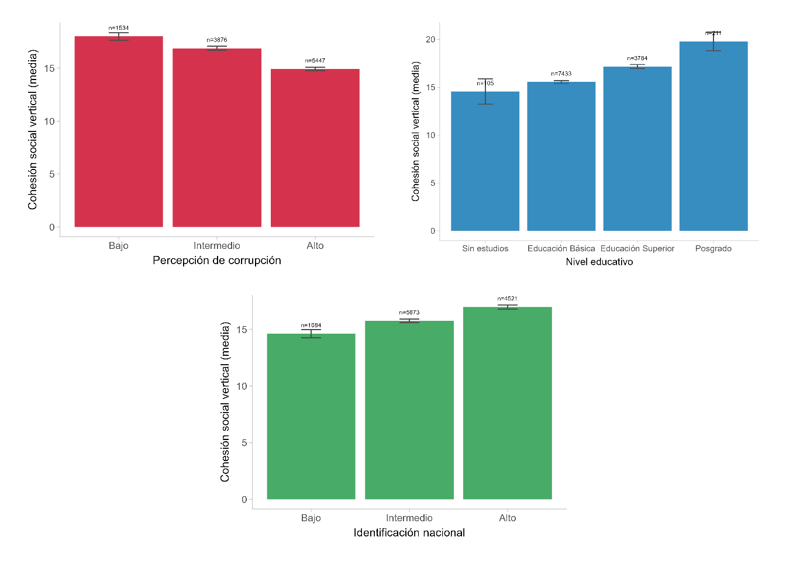
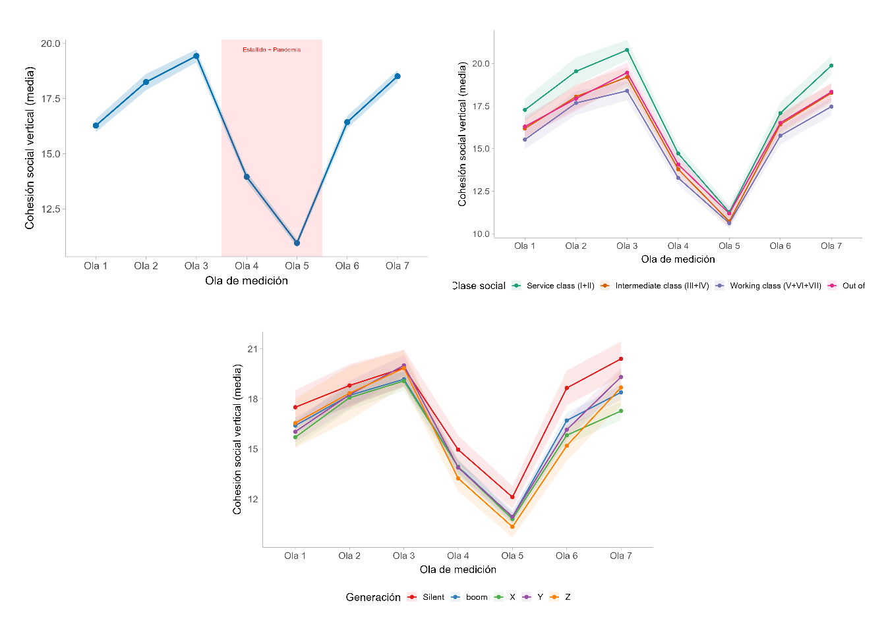

6 Resultados
6.0.1 análisis descriptivo.
| Mean | Std. Dev. | ||
|---|---|---|---|
| Cohesión social vertical (N1 - Y) | 19.1 | 6.2 | |
| Percepción de corrupción (N1) | 4.5 | 0.8 | |
| Edad del entrevistado | 54.3 | 14.4 | |
| Autoidentificación política (N1) | 7.4 | 3.9 | |
| Orgullo de ser chileno (N1) | 4.2 | 0.7 | |
| N | Pct. | ||
| Clase social (N2 - EGP-4) | Service class (I+II) | 310 | 26.9 |
| Intermediate class (III+IV) | 253 | 21.9 | |
| Working class (V+VI+VII) | 319 | 27.6 | |
| Out of labor force | 272 | 23.6 | |
| Generación (N2) | Silent | 103 | 8.9 |
| boom | 499 | 43.2 | |
| X | 270 | 23.4 | |
| Y | 224 | 19.4 | |
| Z | 58 | 5.0 | |
| Sexo (N2) | Hombre | 370 | 32.1 |
| Mujer | 784 | 67.9 | |
| Nivel educacional (N2) | Sin estudios | 10 | 0.9 |
| Educación Básica | 740 | 64.1 | |
| Educación Superior | 379 | 32.8 | |
| Posgrado | 25 | 2.2 |
A partir de los datos descriptivos analizados, se observa una muestra caracterizada por tensiones institucionales agudas y una marcada polarización en las percepciones de la estructura social. La variable dependiente, cohesión social vertical, presenta una media de 16 puntos (\(SD = 6\)) dentro de un rango de \([0; 45]\), lo que sitúa la percepción general en el tercio inferior de la escala, evidenciando un diagnóstico predominantemente crítico o desgastado respecto a la confianza institucional y la legitimidad del orden social vertical. Esta evaluación se contextualiza en un entorno de profunda desafección, donde la percepción de corrupción alcanza niveles críticos: el 86% de la muestra se agrupa en los dos peldaños más altos de la escala (el 50% en la categoría máxima y el 36% en la contigua), lo que contrasta drásticamente con una identidad nacional fuertemente arraigada, donde el 90% de los individuos manifiesta una alta identificación con el país. En términos de su composición sociodemográfica y las variables centrales para las hipótesis, la muestra exhibe una media de edad de 50 años (\(SD = 15\)) con un rango de \([18; 84]\) años, lo cual se alinea con la distribución generacional, donde la cohorte del Baby Boom es la predominante con un 42%, seguida por la Generación X (23%) y la Generación Y o Millennials (21%), dejando en los márgenes a la generación Silent (8.0%) y a los más jóvenes de la Generación Z (6.6%). Por su parte, la estructura de clase medida a través del esquema EGP-7 muestra que el grupo mayoritario corresponde a los trabajadores manuales calificados de la categoría VI (26%), mientras que la clase de servicios en su conjunto (I y II) acumula un 33%, reflejando un mercado laboral con un peso sustancial de sectores asalariados tradicionales y profesionales, y con una presencia menor de trabajadores no calificados en la categoría VII (3.5%). Finalmente, las variables políticas y de trato muestran una autoidentificación ideológica que se ubica en una media de 7.2 puntos (\(SD = 3.9\)) dentro de un espectro de \([0.0; 12.0]\), denotando una leve inclinación hacia el centro-derecha o sectores conservadores según la codificación estándar, combinada con una preocupante asimetría en la variable de trato digno, cuya media de 4.7 (\(SD = 5.3\)) sobre un máximo de 15 indica que la gran mayoría de la población reporta niveles muy bajos de dignidad en sus interacciones cotidianas. Esta compleja realidad estructural y de opinión se distribuye temporalmente de manera estratégica para el análisis longitudinal, con una base inicial del 10% de los casos para las Olas 1 y 2, y una estabilización perfecta del 16% en cada una de las mediciones restantes (de la Ola 3 a la Ola 7), garantizando un volumen de datos homogéneo y robusto para capturar las variaciones temporales asociadas al periodo de crisis y pandemia contemplado en el modelo general.
6.0.2 análisis bivariado.
La figura presenta un análisis bivariado que examina la media de la cohesión social vertical (eje Y) a través de cinco cohortes generacionales (Generation: Silent, Boom, X, Y, Z, en el eje X), segmentado o facetado por las distintas categorías del esquema de clase social EGP-7. Las barras verticales alrededor de cada punto representan los intervalos de confianza al 95%, lo que permite evaluar la precisión de las estimaciones y la significancia visual de las diferencias.
En primer lugar, se observa un efecto generacional parcialmente consistente con la hipótesis H1, caracterizado por una tendencia descendente de la cohesión social vertical a medida que las cohortes son más jóvenes (de Silent hacia Z). Este patrón de “caída” generacional es especialmente pronunciado y nítido en las clases socioeconómicas más altas, como Service Class I y Service Class II, así como en las ocupaciones de rutina no manuales (Routine non-manual y Routine non-manual IIIa), donde los miembros de la generación Silent reportan niveles de cohesión significativamente más altos (superando los 20 puntos en las clases de servicios) en comparación con las generaciones sucesivas, las cuales tienden a estancarse o seguir descendiendo sutilmente en torno a los 15-17 puntos.
En segundo lugar, el comportamiento de las clases manuales y trabajadoras (EGP-V, VI y VII) quiebra la linealidad del descenso generacional, mostrando dinámicas heterogéneas. En la categoría V (Manual supervisors/Lower grade technicians) se aprecia un desplome drástico entre la generación Silent y los Boomers, seguido de una leve recuperación en las generaciones intermedias antes de volver a caer en la generación Z. Por otro lado, la clase VI (Skilled workers) exhibe un patrón en forma de “U”: la cohesión disminuye desde la generación Silent hasta alcanzar su punto más bajo en la Generación X, para luego experimentar un repunte sistemático y estadísticamente visible en las generaciones más jóvenes (Y y Z). Una tendencia inversa o de curva invertida se observa en la clase VII (Unskilled workers/Farm labours), donde la generación Silent inicia con los niveles de cohesión más bajos (cercanos a 13 puntos), sube de forma sostenida hacia las generaciones Boomer, X e Y, y vuelve a contraerse con la llegada de la generación Z.

Aquellos individuos que perciben niveles bajos de corrupción reportan la media más alta en el índice de cohesión social vertical, rozando los 18 puntos. Esta evaluación disminuye de manera progresiva a medida que la percepción transita hacia niveles intermedios, alcanzando su punto más deficiente en la categoría de alta corrupción, donde el indicador de cohesión se contrae fuertemente hasta situarse justo en el límite de los 15 puntos.
En cuanto al nivel educativo, se observa una tendencia lineal marcadamente ascendente que vincula el capital humano con la legitimidad del sistema. Los niveles más bajos de cohesión social vertical se concentran en el grupo de personas sin estudios, el cual se ubica por debajo de los 15 puntos de media. A partir de ese umbral, la valoración del lazo vertical experimenta un incremento constante y sucesivo al pasar por la educación básica y la educación superior, alcanzando su punto máximo e indiscutible en la población con estudios de posgrado, cuya media se posiciona en la cúspide de la escala al rozar los 20 puntos.
Finalmente, el comportamiento de la identificación nacional devela una relación directa y positiva con el orden institucional. Las personas que manifiestan un sentido de identidad nacional bajo presentan un deterioro evidente en su cohesión vertical, registrando puntuaciones por debajo de los 15 puntos. En contraposición, a medida que el arraigo y el sentido de pertenencia con el país se fortalecen hacia niveles intermedios y altos, la media de la cohesión social vertical experimenta un aumento sostenido, logrando superar con claridad la barrera de los 17 puntos en la categoría más alta.

El análisis longitudinal revela una trayectoria temporal de la cohesión social vertical altamente homogénea, marcada de forma dramática por el contexto nacional. Se observa un aumento sostenido entre las Olas 1 y 3, seguido de un quiebre abrupto en las Olas 4 y 5 que coincide exactamente con el periodo del estallido social y la pandemia, donde el indicador cae a su mínimo histórico. A partir de la Ola 6, el sistema muestra una recuperación acelerada, retornando a los niveles iniciales hacia la Ola 7.
Al desagregar los datos, las brechas se mantienen estables en el tiempo, sin que las crisis alteren el orden de los factores estructurales. Por un lado, la clase de servicios y la generación Silent se posicionan de manera persistente en la cúspide de la cohesión vertical, mientras que la clase trabajadora permanece en la base. La única divergencia relevante ocurre en la fase de recuperación post-pandemia (Olas 6 y 7), donde las cohortes más jóvenes (Y y Z) exhiben un repunte o pendiente de ascenso más pronunciado que la Generación X, sugiriendo una reactivación diferenciada. ### Modelos de regresión multinivel.
| Modelo 0 | Modelo Temp. | Modelo 1 | Modelo 2 | Modelo 3 | Modelo 4 | |
|---|---|---|---|---|---|---|
| Intercept | 15.848*** | 15.711*** | 17.915*** | 22.858*** | 23.195*** | 23.017*** |
| (0.111) | (0.180) | (0.682) | (2.318) | (2.244) | (2.244) | |
| Corruption perception (Specific-mean centered) | -0.467*** | -0.480*** | -0.494*** | |||
| (0.090) | (0.075) | (0.077) | ||||
| Corruption perception (Person historical mean) | -2.113*** | -2.079*** | -2.090*** | |||
| (0.166) | (0.163) | (0.163) | ||||
| Age (Specific-mean centered) | 0.072** | 0.030 | -0.053 | |||
| (0.028) | (0.045) | (0.078) | ||||
| Age (Person historical mean) | 0.015 | 0.012 | 0.014 | |||
| (0.023) | (0.022) | (0.022) | ||||
| National identification (Specific-mean centered) | 0.674*** | 0.341*** | 0.340*** | |||
| (0.100) | (0.083) | (0.083) | ||||
| National identification (Person historical mean) | 1.221*** | 1.160*** | 1.162*** | |||
| (0.200) | (0.195) | (0.195) | ||||
| Dignified treatment (Specific-mean centered) | 0.167*** | -0.062** | -0.055** | |||
| (0.016) | (0.021) | (0.021) | ||||
| Dignified treatment (Person historical mean) | -0.309*** | -0.174*** | -0.199*** | |||
| (0.030) | (0.030) | (0.032) | ||||
| Political self-identification (Specific-mean centered) | -0.035 | -0.111*** | -0.108*** | |||
| (0.020) | (0.017) | (0.017) | ||||
| Political self-identification (Person historical mean) | -0.281*** | -0.293*** | -0.297*** | |||
| (0.039) | (0.038) | (0.038) | ||||
| Sex: Female | -0.047 | -0.067 | -0.094 | |||
| (0.200) | (0.195) | (0.196) | ||||
| Education: Basic | 0.968 | 0.659 | 0.707 | |||
| (0.997) | (0.873) | (0.861) | ||||
| Education: Higher education | 2.221* | 1.658 | 1.698 | |||
| (1.013) | (0.888) | (0.876) | ||||
| Education: Postgraduate | 3.782*** | 2.909** | 2.969** | |||
| (1.142) | (1.001) | (0.991) | ||||
| Generation: Boom | -1.893** | -1.089 | -1.074 | -1.068 | ||
| (0.705) | (0.699) | (0.689) | (0.688) | |||
| Generation: X | -2.323** | -1.378 | -1.337 | -1.327 | ||
| (0.714) | (0.897) | (0.883) | (0.882) | |||
| Generation: Y | -2.012** | -1.199 | -1.089 | -1.052 | ||
| (0.717) | (1.111) | (1.093) | (1.092) | |||
| Generation: Z | -2.661*** | -1.625 | -1.524 | -1.481 | ||
| (0.788) | (1.331) | (1.309) | (1.308) | |||
| Intermediate class (III+IV) | -0.585** | -0.419* | -0.426* | |||
| (0.203) | (0.178) | (0.181) | ||||
| Working class (V+VI+VII) | -0.930*** | -0.812*** | -0.864*** | |||
| (0.213) | (0.190) | (0.194) | ||||
| Wave 2017 | 2.113*** | 1.409*** | 1.526*** | |||
| (0.210) | (0.292) | (0.292) | ||||
| Wave 2018 | 3.719*** | 3.463*** | 3.539*** | |||
| (0.195) | (0.223) | (0.257) | ||||
| Wave 2019 | -1.800*** | -2.319*** | -2.090*** | |||
| (0.194) | (0.307) | (0.367) | ||||
| Wave 2021 | -4.866*** | -5.585*** | -5.279*** | |||
| (0.195) | (0.332) | (0.428) | ||||
| Wave 2022 | 0.712*** | 0.053 | 0.516 | |||
| (0.195) | (0.383) | (0.541) | ||||
| Wave 2023 | 3.043*** | 2.242*** | 2.642*** | |||
| (0.210) | (0.418) | (0.591) | ||||
| BIC | 51120.934 | 48412.698 | 51007.369 | 50866.175 | 48179.382 | 48144.670 |
| Num. obs. | 7979 | 7979 | 7979 | 7979 | 7979 | 7979 |
| Num. groups: individuals | 1372 | 1372 | 1372 | 1372 | 1372 | 1372 |
| Var: individuals (Intercept) | 11.697 | 12.197 | 11.668 | 7.386 | 8.650 | 8.804 |
| Var: individuals (Age within) | 28.789 | 19.238 | 27.953 | 28.811 | 18.991 | 17.772 |
| Cov: individuals (Intercept - Age within) | 0.195 | |||||
| Var: Residual | -0.091 | |||||
| Note: Cells contain regression coefficients with standard errors in parentheses. ***p < 0.001; **p < 0.01; *p < 0.05. | ||||||
El análisis de los determinantes de la confianza en las instituciones se abordó mediante una estrategia de modelación de efectos mixtos, idónea para capturar de manera simultánea la variabilidad entre individuos y los cambios a lo largo del tiempo durante el periodo 2016-2023. Siguiendo las recomendaciones metodológicas de Enders y Tofighi (2007), se procedió al centrado a la media de grupo (CWC) para las variables de Nivel 1 y a la inclusión de los promedios históricos en el Nivel 2. Esta especificación es fundamental para la correcta interpretación de los hallazgos, puesto que la estimación de los coeficientes de Nivel 1 permite aislar el efecto within (intra-individual) puro, garantizando que las fluctuaciones anuales específicas estén controladas por el promedio histórico del sujeto. Por su parte, el coeficiente de la variable grupal en el Nivel 2 representa el efecto between (inter-individual), permitiendo una diferenciación teórica y empírica nítida entre dinámicas longitudinales e individuales. Como paso analítico previo, el Modelo 0 (Nulo) permitió realizar la partición de la varianza y calcular la Correlación Intraclase (ICC) con el fin de evaluar la pertinencia del anidamiento de los datos. A partir de una varianza de intercepto (\(\tau_{00}\)) de 11.697 y una varianza residual (\(\sigma^2\)) de 28.789, se obtuvo un ICC de aproximadamente 0.289. Este resultado indica que el 28.9% de la varianza en la confianza institucional se explica por diferencias estables y estructurales entre las personas, mientras que el 71.1% restante responde a fluctuaciones temporales endógenas o a errores de medición. Al superar ampliamente el umbral crítico del 10%, este indicador justifica técnicamente el empleo de modelos multinivel, evitando así sesgos potenciales en las inferencias estadísticas subsiguientes. Al examinar los predictores sustantivos en el Modelo 4 (modelo final), la percepción de corrupción manifiesta ser el detractor más robusto y severo de la confianza institucional. Bajo la lógica de Enders y Tofighi, se evidencia un marcado contraste entre el efecto crónico y el shock puntual: el promedio histórico de la percepción de corrupción de un individuo (efecto between) ejerce un impacto devastador (\(\beta = -2.090\), \(p < 0.001\)) que cuadruplica la magnitud de una fluctuación anual específica (efecto within, \(\beta = -0.494\), \(p < 0.001\)). Esto sugiere de forma contundente que la confianza no se erosiona de manera irreversible por escándalos aislados, sino por una evaluación sistémica y prolongada de falta de integridad en el entorno, coincidiendo con el diagnóstico de la OCDE sobre la prioridad de la integridad pública para reconstruir el vínculo ciudadano. En una dirección opuesta, la identificación nacional se ratifica como el principal motor de resiliencia y cohesión social; su promedio histórico presenta un fuerte efecto positivo (\(\beta = 1.162\), \(p < 0.001\)), actuando como un potente amortiguador cultural. Por otro lado, el comportamiento de las variables de estratificación y capital humano manifiesta importantes fracturas de carácter estructural y generacional. Un hallazgo metodológico y teórico fundamental ocurre al observar la transición entre los modelos: en el Modelo Temporal, las variables de generación (Boomers, X, Y y Z) mostraban efectos negativos significativos; sin embargo, al controlar por el promedio histórico de la variable individual edad (Nivel 2) a partir del Modelo 1, el efecto de estas variables generacionales pierde su significancia estadística. Esto demuestra que la aparente desconfianza atribuida a la cohorte era absorbida por el efecto puramente biográfico y longitudinal de la edad acumulada. En cuanto a la estructura de clases, los resultados exponen una brecha socioeconómica evidente: tanto la clase intermedia (\(\beta = -0.426\), \(p < 0.05\)) como la clase trabajadora manual (\(\beta = -0.864\), \(p < 0.001\)) exhiben niveles de confianza significativamente menores en comparación con la clase de servicios de referencia, validando el diagnóstico sobre la exclusión material y subjetiva del pacto social en América Latina. Finalmente, respecto al capital educativo se observa una tendencia monótonamente creciente en los coeficientes, aunque únicamente el nivel de Posgrado se consolida como un habilitador estadísticamente significativo (\(\beta = 2.969\), \(p < 0.01\)). Cabe destacar que el modelo final constató la estabilidad de estas brechas estructurales a través del tiempo, dado que la varianza y covarianza de las pendientes aleatorias resultaron marginales.Finalmente, la dimensión temporal del modelo captura con precisión la trayectoria histórica reciente del contexto chileno a través de los coeficientes asignados a las olas de medición en comparación con la Ola basal de 2016. Tras repuntes significativos en 2017 (\(\beta = 1.526\), \(p < 0.001\)) y 2018 (\(\beta = 3.539\), \(p < 0.001\)), se registra una caída estrepitosa del indicador de confianza hacia la Ola 2019 (\(\beta = -2.090\), \(p < 0.001\)) y especialmente en la Ola 2021 (\(\beta = -5.279\), \(p < 0.001\)), reflejando el impacto acumulado y erosivo del estallido social y la subsiguiente crisis de la pandemia. No obstante, al avanzar hacia la Ola 2023, los datos muestran un fuerte repunte estadísticamente significativo (\(\beta = 2.642\), \(p < 0.001\)), sugiriendo una fase de estabilización institucional tras el periodo de mayor agitación. En contraste con estos movimientos, la variable de Trato Digno arrojó un comportamiento contraintuitivo respecto a las expectativas teóricas, registrando coeficientes negativos tanto en su componente within (\(\beta = -0.055\), \(p < 0.01\)) como between (\(\beta = -0.199\), \(p < 0.001\)) en el modelo final, lo que plantea la necesidad de revisar su operacionalización en escenarios de alta desafección ciudadana.
Cabe mencionar que el \(R^2\) marginal de el último modelo reportado fue de 0.293 lo que indica que los predictores fijos del estudio explican por sí solos casi un tercio de la variabilidad en la confianza institucional. \(R^2\) condicional, por su parte, que integra efectos fijos y aleatorios fue de 54.3%. Esta diferencia confirma que una parte sustancial de la desconfianza en Chile es un rasgo crónico y persistente de los individuos que trasciende las fluctuaciones anuales.